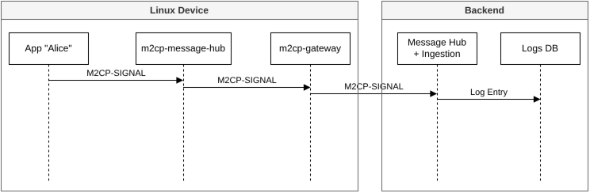
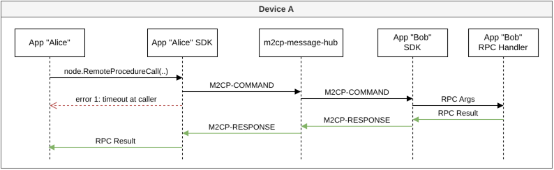
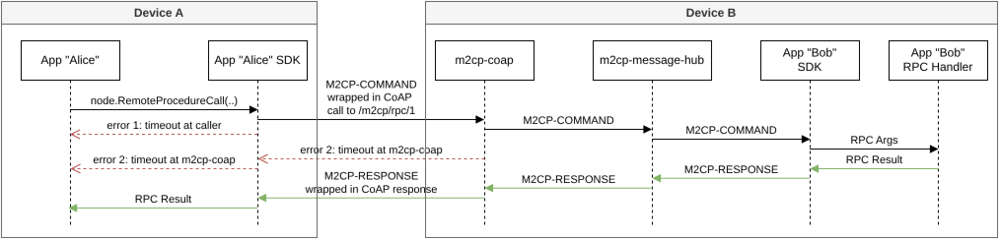
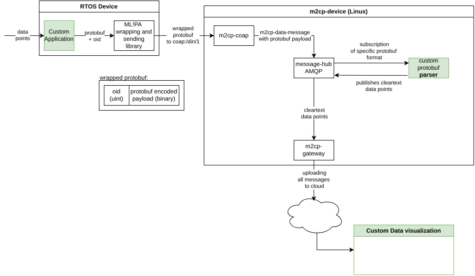

5. Messaging
L-IoT is a system for transporting information between the nodes of an IoT infrastructure. The basis of this communication is the message.
M2CP messages consist of a header, a body (and an optional third block for signatures). A message is represented by a struct internally. When transmitting messages, they need to be serialized first. The simplest way to encode a message is as JSON - a rather inefficient format. Our SDK implementation also supports a selection of binary formats. As a user or developer you don’t have to think about the choice of encoding, as the SDK handles the encoding automatically according to the context.
M2CP message can be transmitted via any transport protocol. Practical choices would be AMQP, MQTT, or HTTP.
The standard delivery method for exchanging messages locally on a Device is via LavinMQ, which implements AMQP. In the following we simply call it message-hub. Other transport channels (e.g. Azure IoT Hub) can be used to establish an uplink to a cloud service.
An application can use the M2CP SDK to participate in the M2CP messaging network. This is done be creating a network connection and a ‘node’. The node can be used to emit messages and to expose RPC endpoints.
5.1. Typical Message Routing
When you’re developing an App or analyzing an existing installation, you might want to inspect the messages that are being sent and received. Messages are routed through several queues and exchanges before they reach their destination. A typical message path is:
5.1.1. Log Message Linux App to Cloud

If a Linux app is using the m2cp-sdk to participate in messaging, it can send SIGNAL messages. Those are log messages that can be subscribed by other apps on the same system and which are also routed to the cloud, where they’re added to the unified logging system. From there, they can be accessed using the CLI or the web-based Appstore clients.
5.1.2. Log Message RTOS to Cloud
{kind=link}

Analog to the logging from Linux apps, Real Time Devices can also send log messages to the cloud. They do so by
sending a specially formatted data message to /din/1. This message is then transformed into a SIGNAL message
and routed to the cloud analog to the above scenario.
5.1.3. Local To Device RPC via Backend
{kind=link}

5.1.4. App To App RPC on a Device

5.1.5. Device To Device RPC via IP
{kind=link}

App (sender) -> message-hub -> m2cp (gateway) -> IoT Hub (hub) -> cloud backend (receiver)
You can see from the diagram, that the message is delivered to multiple destinations. This is possible due to the publish/subscribe pattern used here.
RPC messages are typically coming from the cloud backend and are routed to the local App. The result is delivered back to the cloud:
cloud backend (sender) -> IoT Hub (hub) -> m2cp (gateway) -> message-hub -> App (receiver)
Note, that the gateway creates a copy of the command, which is sent to the archive.
The result of the command is sent back to the cloud backend:
App (sender) -> message-hub -> m2cp (gateway) -> IoT Hub (hub) -> cloud backend (receiver)
The result is also sent twice – once to the cloud backend and once to the archive.
The result is also sent twice – once to the cloud backend and once to the archive.
5.2. Data Points to Data Visualization
The following will explain the full path of some data points, as sent from a Real-Time Operating System (RTOS), through the system up to the backend for visualization.
Let’s look at the following graphic of the Data Points to Data Visualization Route:
{kind=link}

The white parts are generic components, the green highlighted components are build by customers.
Data points from sensors enter at the left side and are processed by a
custom application. The data points are serialized for interchange
between the RTOS and the Linux system. We require a tuple of a unique
OID and a serialized Protobuf. This byte
sequence is sent via
CoAP
to the m2cp-coap application on the Linux system.
m2cp-coap is a generic application and only receives CoAP messages
and forwards the byte sequence as a
AMQP
message with a topic. The topic string is
deterministic and contains the OID, e.g. oid42. m2cp-coap will
never parse custom data points. Also note, the M2CP Message header
contains a scope field. The raw data points are forwarded with scope
device, so the raw data will not leave the Device by default.
Any custom parser application can subscribe to this topic. The task of
the custom parser is to remove the OID prefix, deserialize the data
structure from the Protobuf, and transform it into M2CP
Data. This data is sent back to the message-hub and could be
subscribed by other applications. These messages have a global scope
by default.
The m2cp-gateway automatically subscribes to all M2CP messages of
global scope and uploads them to the cloud. Note, different M2CP
Message types end up in different systems: Signals are uploaded to the
IoT Hub; Data is uploaded to the Data Message Hub.
The last step is a custom visualisation application, that runs in the cloud and processes Data from the Data Message Hub.
5.3. M2CP Messaging Protocol
The M2CP Messaging Protocol is implemented in the Edge Device SDK.
It is strongly advised to use the SDK instead of implementing clients from specification.
This chapter is for reference only.
The message format chapter specifies a single message, while the routing specification chapter defines, how these messages are delivered within the M2CP Messaging Network using addresses and topics.
5.3.1. Changelog
Changes in messaging specification:
Version |
Date |
Change |
|---|---|---|
1.0.0 |
2023 |
Initial release |
1.0.1 |
2024-04-24 |
Added “Scope” field to message header. This is a non-breaking change. Messages without this field are interpreted as having scope ‘GLOBAL’ |
1.1.0 |
2024-08-14 |
Extended address format by allowing IP addresses additional to Device IDs |
5.3.2. Message Format
Note
The message format is NOT based on JSON. But: In this specification we represent the structure of the message structs in JSON notation, as that is easy to read. In-memory the messages are simply structs.
The messages are implemented as structs and can be serialized in various ways. A binary encoding is used for transmission between nodes.
Note
The format for message serialization allows upgrading the binary encoding to more efficient methods in the future, as the tip of the serialized message contains an “encoding” field, which specifies the serialization method used.
Message Types
Four types of messages exists:
commands (RPC calls)
responses (responses to RPC calls)
signals (system or app status information, log and error messages)
data (measurements, data points)
Message Structure
This M2CP.2 message specification is an evolutionary step from the format of prior versions of M2CP, aiming at keeping changes small to make adaptions of existing software easy.
Struct Format
Messages are structs. How they are represented in-memory depends on the implementation. In our Go-SDK we’re using structs.
Here’s the general format of a message. In this documentation we’re using JSON as a notation to describe the structure of the data. Messages can be serialized in different ways depending on the use case.
{
"Header":{
"Type": "<COMMAND | RESPONSE | SIGNAL | DATA >",
"Topic": "<topic>",
"Scope": "<scope>",
"TimeStamp": "<decimal unix time stamp in seconds>",
"Id": "<uuid>",
"TaskId": "<uuid>",
"Origin": "<address of sender>",
},
"Body":<payload>, // TODO: array or any?
// optional:
"Assertion": {
"Hash": "<message hash>",
"Signature": "<signature>",
"SigningKeySha3": "<sha3-384 of public key for verifying the signature>",
}
// optional:
"Trace": [
{"A": "<address>", "T": "<timestamp>"}, ..
]
}
Binary Format (Version 1)
Version 1 of our encoding format serializes the message contents to JSON and uses deflate to compress the contents. This format is used for transporting messages locally within a Device. The uplink to the cloud uses a different, more compact transport encoding.
4 bytes payload size in bytes (= 1 + 1 + n + 4)
1 byte format version (= 1)
1 byte compression type (0=uncompressed, 1=deflate)
n bytes message serialized to JSON
4 bytes CRC32 of version, compression type and JSON-serialized message (1 + 1 + n bytes)
Compressed Uploading Format
The m2cp-gateway uses a more compact encoding to save bandwidth. Multiple messages are packed into a single compressed package, which is then uploaded to the cloud, unpacked there, and published into the respective destinations.
4 bytes size of multi-message payload
1 bytes format version (= 2)
1 bytes compression type (0=uncompressed, 1=deflate, 2=zstd)
n bytes multi-message payload
There’s no CRC32 checksum in this wrapper format, because the zstd format includes a checksum and the contained messages also come with a checksum.
To decode such a binary message, the receiver must:
Read the size of the payload
Read the format version, assert that it’s “2”
Read the compression type, it should be “2” (zstd)
Read the compressed payload
Decompress the multi-message payload using zstd
The multi-message payload is a concatenation of binary encoded messages. To decode the multi-message payload:
Read the size of the first message (4 bytes)
Copy bytes 0 to size+4 to a new buffer
Decode that buffer as a message
Repeat until the end of the multi-message payload is reached
Header
The header section is identical for all message types. It contains the information needed for routing the message to its recipient(s).
Header.TypeMessage type of"COMMAND","RESPONSE","SIGNAL"OR"DATA"Header.TopicString describing the message topic, see addresses and topicsHeader.ScopeDefines the scope of recipients intended by the sender of the message, can be"PROCESS","DEVICE","NETWORK","GLOBAL"Header.TimeStampUnix time (64bit) in seconds when the message was initially created by the sender in a decimal string representation.Header.IdRandom message id (UUID v4, RFC 4122)Header.TaskId(optional, UUID v4, RFC 4122) see below.Header.OriginAddress of sender (see addresses and topics)
Scope
The scope specifies the target audience intended by the sender of a message and has an effect on routing. A router only delivers a message to a subscriber or forwards a message across the next hop through a gateway, if the target is within the scope.
Scope specifies the default behaviour for routers handling a message. The sender has no guarantee, that the intended scope will be respected. A router might be configured with an override rule set by an administrator, which e.g. causes all messages to be routed to the cloud for debugging purposes.
The available scopes are:
Scope |
Message will delivered … |
|---|---|
PROCESS |
…only to recipients within the same process. This is usefull for inter-thread-communication in a single application consisting of several independent services, threads, agents or modules. |
DEVICE |
…only within the scope of the Device i.e. only to clients that can reach the link-local address |
NETWORK |
…only to recipients, which can reach the message hub to which the message was posted via their network connection |
GLOBAL |
…to all recipients in the local network and to the cloud |
How is this enforced?
Not all implementations of the 2cp-messaging protocol can enforce all of the above rules – which is another reason, why no guarantee can be given, that the rules will be respected. It depends on the specific implementation.
The current (as of 2024-04-24) implementation of SDK and m2cp-gateway doesn’t know these rules.
The next planned release (2024-05) of m2cp-gateway and SDK respects the GLOBAL directive, but treats all other messages as NETWORK scope.
A further update of the SDK, which will replace AMQP with CoAP, is in planning – this future version will respect all four scopes.
What is a TaskId?
A single action can involve several Devices, services, databases, and APIs. E.g. a developer sends a GraphQL request to a backend service, this service does a DB request, then sends an RPC call to a Device, gets a result, and forwards that to the developer. Each participant generates logs – but it’s difficult to combine those, when debugging such a process. A TaskId allows connecting the dots and combing the traces from different logs into one detailed documentation of the execution of a task. To achieve that, a random TaskId has to be generated by the originator of an action and passed all the way through the chain of communication.
Body
The body section is formatted dependent on the message type:
Command
A participant can implement and consume arbitrary RPC calls. An RPC call has exactly one recipient. RPC calls contain an array of parameter objects, allowing for aggregated calls with n sets of parameters (e.g. for calling the same function on n sensors controlled by a single app).
"Body": {
"Command": "<command name>",
"Parameters": [
{
"param0": "<value0>",
..
"paramN": "<valueN>"
}, ..{..}]
}
Body.CommandName of the RPC command to call. Command Names must be in PascalCase. Names should start with an object and end with a verb, so that similar commands are next to each other when listed alphabetically. BAD example: “AddSensor” and “DeleteSensor” are not next to each other. GOOD example: “SensorAdd” and “SensorDelete” are natural neighbours in the alphabetic order.Body.Parameters[{}..{}]Array of dictionaries of parameter names and their respective string values. Parameter names must be in camelCase
Parameter values must be encoded as strings. The recipient is responsible for parsing the parameter values to the types needed (e.g. integer).
Attention
Defining the required types of both parameters and return values is enforced by the SDK. The types must be defined in the comments of the implementations of the RPC methods. Types supported by the SDK are: “bool”, “int”, “int[]”, “double”, “double[]”, “string”, “datetime”, “json”, “binary”
RPC calls can be implemented as needed. Some calls are implemented by default in the SDK (e.g. PluginUptime or PluginDocumentation).
Response
When an RPC call is executed, it generates a result message. The caller is guaranteed to receive a result message, even if the recipient is unreachable or crashed while executing the call. In such cases, the SDK used for sending the call will locally generate an error result message for the waiting callback function.
"Body": {
"CommandId": "<uuid of command message>",
"Responses": [{
"Error": <code>,
"Message": "<human readable success/error message>",
"Results": {
"result0": "<value0>",
..
"resultN": "<valueN>"
},..{..}]
}
Body.CommandIdThe id of the command message this message responds toBody.ResponsesArray of responses to the array of RPC callsBody.Responses[].ErrorSignifies success of RPC execution. 0 = success, >0 = error codeBody.Responses[].MessageA human-readable success/error messageBody.Responses[].Results{}Dictionaries of return value names and their respective string values.
Body.Responses[].Results can be null, only if Success == false.
Result values must be encoded as strings. The recipient is responsible for parsing the result values to the types needed (e.g. integer).
Signal
A signal message is emitted by a participant to announce a system event (e.g. a runtime error, an important state change). Signals are basically log messages.
"Body": {
"Type": "<ERROR | WARNING | INFO | DEBUG>",
"Name": "<signal name>",
"Content": "<signal content>",
}
Body.TypeType of the signal.DEBUGshould not be sent in production unless explicitly activated via RPC.Body.NameName of the signal “system restart announcement”, “application error”, “update installed”, …Body.ContentDetails of the signal
Signals can be sent as needed.
Data
Data messages are designed to deliver time series of n-dimensional data points.
"Body": {
"FormatId": "<formatId>",
"Columns": [
{"Name": "<col0>", "Type": "<type0>"},
..,
{"Name": "<colN>", "Type": "<typeN>"}
],
"Data": [
{
"T":"<timestamp>",
"D":["<data0>", .., "<dataN>"]
},
..
{
"T":"<timestamp>",
"D":["<data0>", .., "<dataN>"]
}
]
}
Body.FormatIdIs an optional field for defining a unique id for this format. This id can help the subscribers to know how to parse this type of data. The id should contain a namespace prefix to avoid name collisions – e.g. “mlpa_oid_42”Body.ColumnsNames and types of the columns. Available types are: “bool”, “int”, “int[]”, “uint32”, “uint32[]”, “uint64”, “uint64[]”, “double”, “double[]”, “string”, “binary”, “datetime” (ISO 8601 in UTC)Body.DataThe time series
(The binary data type is internally encoded as String/Base64.)
Each entry in the time series consists of:
TUnix timestamp in decimal representation (set to0if no timestamp needed)DRow of data, same length as `Body.Columns’. All values encoded as strings.
The precision of timestamps can be down to seconds (e.g. 1668431167), milliseconds (e.g. 1668431167.123) or microseconds (e.g. 1668431167.123456) as needed.
Optionality for values of string, int, or float (non-array) types is represented by setting the value to null, since version 13.0.0 of the go SDK.
go SDK version 13.0.5 also added support for optional bool values.
Assertion
All messages from the cloud to a Device (and vice versa) must pass through m2cp-gateway, the gateway between the cloud and Device local messaging. m2cp-gateway is responsible for verifying these signatures. Invalid messages are dropped (generating an error SIGNAL message and an error RESPONSE-message in case of an invalid COMMAND message). Valid messages have their assertion property removed and are then routed to the final recipient.
Devices can also sign messages to the cloud using the private key stored in their TPM-chip. This functionality is provided by the SDK.
The assertion section of a message stores the message authentication:
Assertion.Hash The hash of the message (calculated by SDK)
Assertion.Signature Hash signed with private key of sender
Assertion.SigningKeySha3 Sha3-384 of signing key
Command messages must be signed by a valid key, other types of message can be signed.
Hash Calculation
The message hash is calculated as H(H(S(Header)) + H(S(Body))) with
H = SHA3_384, S = JSON-Serialization, + = concatenation and
Header/Body being the complete data objects of header and body.
Distribution of Signing Keys
For validating signed messages from a cloud service to a Device, the Device needs the public key of the cloud service.
The hardware currently under development will include a TPM module for this purpose. On legacy platforms (e.g. the RasPi) without TPM, keys are stored in the protected COMMON directory of the m2cp-gateway App package.
The initial public key for signed messages is received by the Device at installation time. Keys can then be rotated by sending further keys via signed COMMAND messages. Each key has a valid_from field. m2cp-gateway always uses the key with the highest valid_from value, which is below the current date. Keys with a valid_from value above the current date are stored for future use.
This allows implementing key rotation by periodically sending new keys to the Device.
A deletion command allows the deletion of keys on the Device.
Threat Analysis
Assertions guarantee the integrity and authenticity of a message
Assertions are verified by the end points of Device<->cloud communication
Local messages on the Device are not verified
Currently only RPC messages are expected to contain assertions to secure remote Device control
As the message format doesn’t define encryption, confidentiality is achieved by using transport layer encryption of Device<->cloud communication (SSL)
Trace
This optional section can be used to store “post stamps” of the nodes a message passed through while being delivered. The array stores one object for each node that added a “post stamp” to the message. Trace can be used to analyze which sections of message delivery take how much time – bottlenecks or slow relays can be identified.
Trace[i].A The address of the node having routed the message
Trace[i].T Unix timestamp in decimal representation, when the message was processed
5.3.3. Message Routing
The M2CP Messaging protocol is designed to be transport-layer agnostic i.e. any means of transportation (e.g. HTTP, AMQP, MQTT, …) can be used to deliver messages to the recipient. Each node in the messaging-network has a globally unique m2cp-address (short: address) used for routing.
Implementation
All routing functionality is implemented in the Edge Device SDK.
It is strongly advised to build Apps using that SDK instead of implementing and routing functionality yourself.
This specification is aimed at providing insight into the functionality implemented by the SDK.
Message delivery methods
DATA and SIGNAL messages are published following the publish/subscribe pattern. Any node can subscribe to messages from any address within his scope. Delivery is not guaranteed for publish/subscribe messages. Reasons for a message not arriving at a subscriber can be:
subscriber wasn’t online when the message was published
message broker was forced to drop messages due to queue overflow
COMMAND and RESPONSE messages are delivered following the request/response pattern. They’re delivered with a higher quality of service: the caller always receives an answer. If the recipient receives and processes the message, a confirmation message is returned to the sender. If delivery fails or the response doesn’t arrive in time, the sender receives an error result message generated by the routing layer. When receiving an error result because of a time-out, it is not possible to tell, if the recipient received and processed the message – he might have done whilst the response never arrived because of a bad network connection.
Locality
Routing differentiates between local and global scope.
Nodes running on Devices can only receive messages from
the same Device
a node in the cloud
Nodes running in the cloud can receive all messages and send messages to any node in the global network.
Address format
Every participant in the messaging network has a globally unique address. A participant can be e.g.:
An App emitting data points
A cloud service sending RPC calls to a Device
An application with multiple threads, each implementing a different feature
The address format for m2cp-messaging-nodes of Apps running on Devices is:
<app>.<device>
<feature>.<app>.<device>
The <device> part can be:
the Device ID
the IPv6 address of the Device in format
[<ipv6>],[<ipv6>]:<port>,[<ipv6>%<interface>]or[<ipv6>%<interface>]:<port>the IPv4 address of the Device in format
[<ipv4>],[<ipv4>]:<port>(the IPv4 address must be enclosed in square brackets!)the keyword
localfor device-local messagesthe keyword
cloudfor messages to/from cloud services
The device-serial is derived from the hardware and unique for each Device. When creating a message using the SDK, <app> and <device> are automatically set.
The SDK offers methods to set the <device> part to a different value, e.g. for testing purposes or when running multiple Apps in a single application.
The <app> is typically the name of the application running the application. It is possible, though, to set an arbitrary app name when creating a message.
The <feature> part is optional and can be used to differentiate between different endpoints of an app. Only this part is allowed
to contain additional dots. This is useful for allowing subscribers filtering for specific endpoints more easily.
Example: sensor.17.temperature.app.<serial>, sensor.17.humidity.app, sensor.18.temperature.app.<serial> and sensor.18.humidity.app are
endpoints of the same app. A subscriber can filter for e.g. sensor.17.*.app.<serial> or sensor.*.humidity.app to receive messages from all sensors of a specific type.
A * filters for a single token, # for any number of tokens.
The <feature> field should be used, if a single app has more than one endpoint, e.g. a sensor app could offer
one endpoint per attached physical sensor (e.g. sensor-0.sensorapp.<serial>, sensor-1.sensorapp.<serial>) or
an app could offer separate endpoints for different sets of functionality.
Address name constraints
Names may only contain characters
a-z,A-Z,0-9,–and_<feature> has max. length of 40 characters
<application-name> has max. length of 40 characters
<device-serial> has a max. length of 36 characters (serial is a UUID v4)
<service-name> has max. length of 40 characters
Reserved Addresses
Some addresses are reserved for internal (routing) use and should not be used by applications.
Routing gateways use:
sys-gw
sys-gwc.<id>
Topics
All messages are sent to topics.
Data and Signal messages follow a publish/subscribe pattern.
Data messages are published to the topic
data/<feature>.Signal message are published to
signal/<feature>.
Command messages are also sent to topics. But they follow a classic point-to-point pattern as these topics contain the addresses of the respective recipients.
The topic for commands are:
command/<address>(with the address of the command-recipient), response messages toresponse/<address>(with the address of the command-sender).
All command and response messages are additionally published on the log exchange with log/ added to the topic as a prefix: log/command/<address>, log/response/<address>.
Wildcards
You can subscribe to a single specific topic to receive e.g. DATA messages from it, or you can subscribe to all topics matching a certain filter using wildcards.
Two wildcards are defined: * stands for a single token, # for any number of tokens.
Examples:
data/sensor/*/temperature - matches DATA messages any feature structure like sensor.*.temperature
data/# - matches any DATA message
data/sensor/temp# - matches DATA messages from any feature starting with sensor.temp
Broadcast topic
The special topic signal/!broadcast is subscribed by all local nodes and used for network discovery:
Signal
hello?: The node sending this signal asks all reachable nodes to answer withhello!Signal
hello!: Sent, when a node starts up and as a response tohello?, includes uptime as value.Signal
bye!: Sent, when a node does a controlled shutdown
RabbitMQ
RabbitMQ (AMQP) is one possible transport layer for m2cp-messages. When transmitting m2cp-messages via RabbitMQ, the following fields are used:
COMMAND and RESPONSE messages:
RoutingKey: is set to the receivers address for COMMAND and RESPONSE messages (direct delivery)
Exchange: empty
ContentType: application/json
Body: the message
CorrelationId: the id of the COMMAND message (also when sending RESPONSE to a command)
ReplyTo: in case of COMMAND message, this contains the routing key for the RESPONSE
Sending an RPC call using the tool rmq-send:
$ rmq-send -h localhost -p 5672 -e "" -r 'command.rpc-endpoint.snapname.devicename' -m '{"Header":{"Type":"COMMAND","Topic":"command/rpc-endpoint.development-756767.9c12c037-c379-43c4-bad9-3dd992cd9ade","Timestamp":"1687353782.30423","Id":"c2005f58-8729-4164-9290-e7c1c3c2ab72","Origin":"rpc-caller.development-763187.9c12c037-c379-43c4-bad9-3dd992cd9ade"},"Body":{"Command":"test","Parameters":[]}}'
5.4. Nodes and Remote Procedure Calls (RPC)
On each Device, there are several nodes. A node is an endpoint of a running application, which participates in m2cp-messaging. An application can have several endpoints representing features of the application. Each endpoint has a globally unique address called m2cp-address. Please refer to the M2CP Messaging Specification for technical details on addresses.
To enable m2cp-messaging for an application, please refer to Edge Device SDK.
5.4.1. Node discovery
List all nodes running on a Device either by name or by serial:
$ m2cp device node list <device-name>
$ m2cp device node list <device-serial>
5.4.2. Node information
Each node is equipped with an auto-documentation command. You can
retrieve this documentation from a node using: $ m2cp device node info <address>
This will receive and print a documentation of available rpc-commands from that node.
5.4.3. Node RPC
You can use m2cp for sending RPC messages to nodes. See m2cp device node rpc --help.
JSON mode
Prepare a JSON file (“example.json”) containing the command, e.g.:
{ "Command": "NodeUptime", "Parameters": null }or{ "Command": "GetDeviceSnapdLogs, "Parameters": [{"name": "m2cpd", "lines": "10"}] }(Make sure, that all values are strings:"lines": 10is wrong,"lines": "10"is correct)find a Device to send the command to
$ m2cp device listfind a node on a Device to send the command to
$ m2cp device node list <device-serial>orm2cp device node list <device-name>Send the command to the Device
$ cat example.json | m2cp device node rpc --stdin <node-address>
Here are some elaborated examples of RPC calls:
Get the online status of a Device:
+ DEVICE_SERIAL=96e40acf-7854-5dd6-a480-1cddecc9b1e7
$ echo '{ "Command": "DeviceOnlineStatus", "Parameters": null }' | \
m2cp device node rpc --json --stdin rpc.m2cp-gateway.96e40acf-7854-5dd6-a480-1cddecc9b1e7 | \
jq
{
"commandId": "13d563ed-cdf9-4f4a-8740-7dd1f93a60c9",
"responses": [
{
"error": 0,
"message": "success",
"results": [
{
"key": "online",
"value": "true"
}
]
}
]
}
Retrieve the IP addresses per interface from a Device:
$ echo '{ "Command": "DeviceInfo", "Parameters": null }' | \
m2cp device node rpc --json --stdin rpc.m2cp-gateway.96e40acf-7854-5dd6-a480-1cddecc9b1e7 | \
jq '.responses[0].results[0].value | fromjson' | \
jq .ipaddresses
{
"eth0": [
"192.168.0.17",
"10.0.1.47",
"2001:1438:400c:7720:522d:f4ff:fe2d:6d95",
"fe80::522d:f4ff:fe2d:6d95"
],
"lo": [
"127.0.0.1",
"fd00:c0a9:cafe::1",
"::1"
]
}
Retrieve the hardware serial from a Device:
$ echo '{ "Command": "DeviceInfo", "Parameters": null }' | \
m2cp device node rpc --json --stdin rpc.m2cp-gateway.96e40acf-7854-5dd6-a480-1cddecc9b1e7 | \
jq '.responses[0].results[0].value | fromjson' | \
jq '."hardware-serial"'
"0"
Controlling a State Machine
For convenience, the m2cp CLI tool has integrated support to run the
RPCs of a State Machine in a
simple way from the command line:
$ m2cp device node statemachine <address> <command> [state]
where
addressis the m2cp-address of a statemachine-endpoint node. E.g.statemachine.m2cp-statemachine.$DEVICE_SERIAL.commandis one of “state”, “states”, “logs”, “jump”, “trigger”
Commands
state: query the current state of the state machine
states: query all states of the state machine (returns the full configuration file)
logs: query run logs of the state machine
jump [state]: jump to [state] (this forces the state machine to abort the current execution and jump to the given state, it then continues execution from there)
trigger [state]: if the statemachine is at [state] and currently waiting for a user trigger, this command will cause it to continue